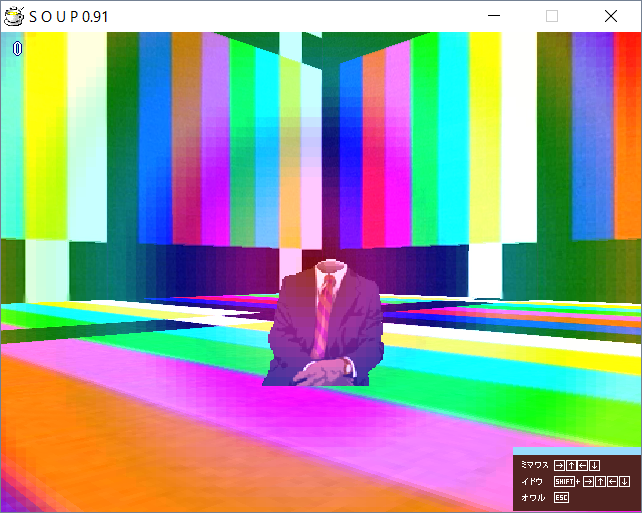

| Photo |  |
| Day | 5 |
| Internal Name | tarroom2 |
| Creator | taro |
| Prefix | tar |
Commercial Room (tarroom2) is a room accessible from Day 5. It was made by taro.
The room features typical SMPTE color bars as the walls and the floor, almost as if you're inside a TV during maintenance.
The object looks to be the body of a sitting man with a black jacket with a white shirt underneath and a red-orange striped tie. The man doesn't have a head, nor the lower part of his body, but has visible hands with a watch on one of them.
◄ Corrupted Drawing Room (takroom0) | Go back to Rooms | Town Room (donroom4) ►